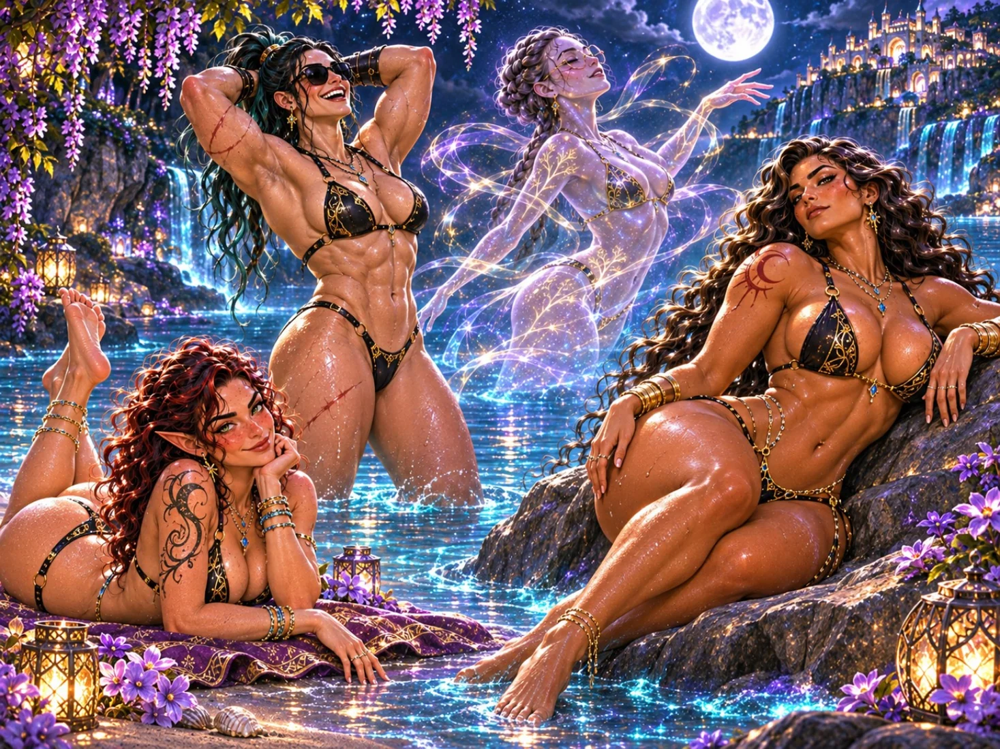
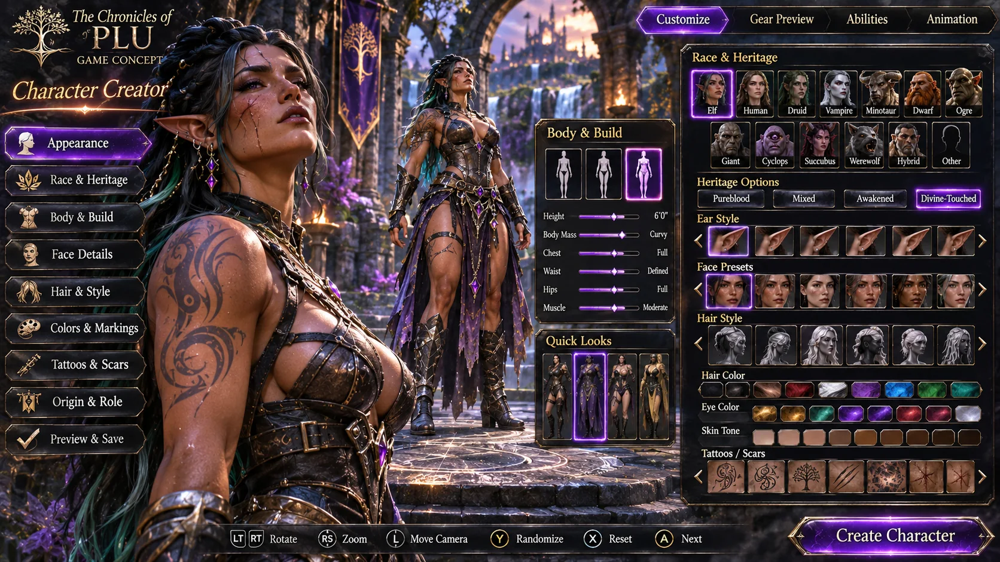
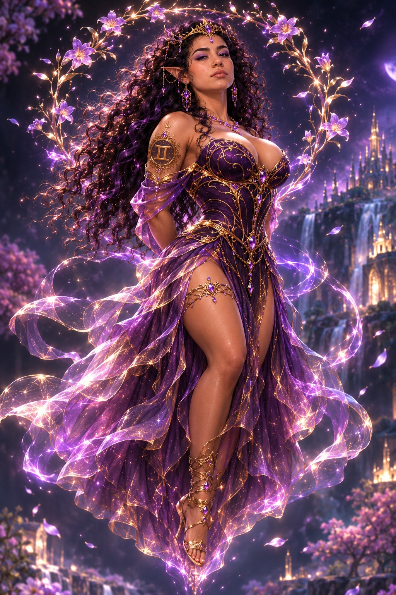
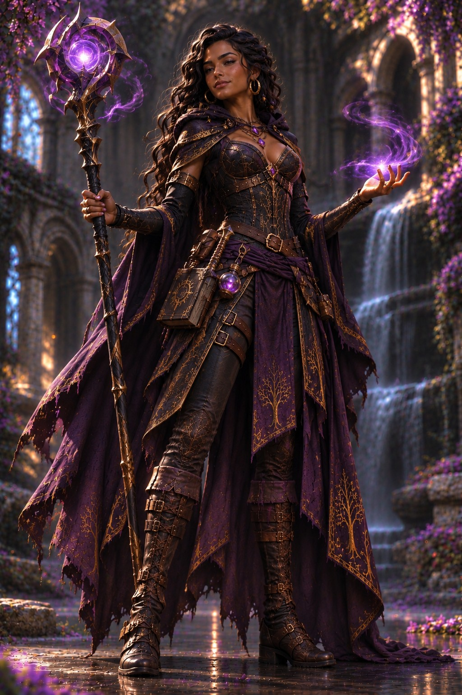
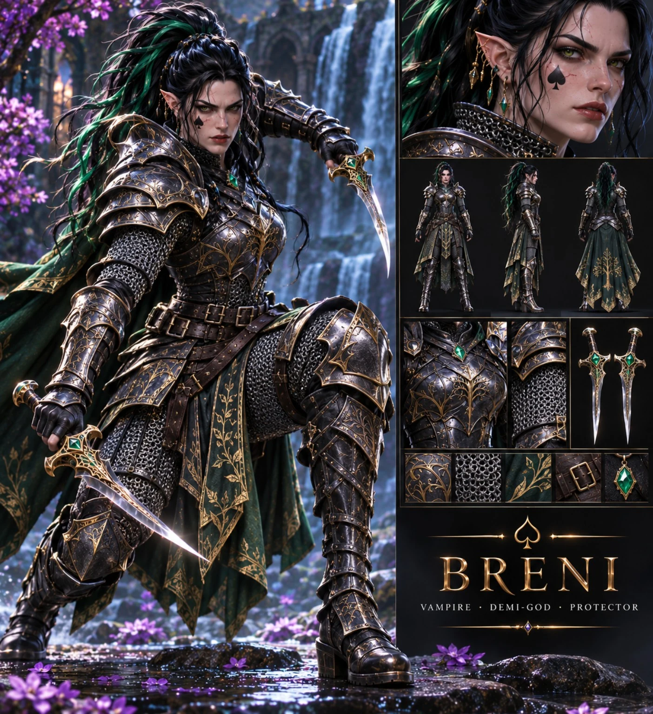
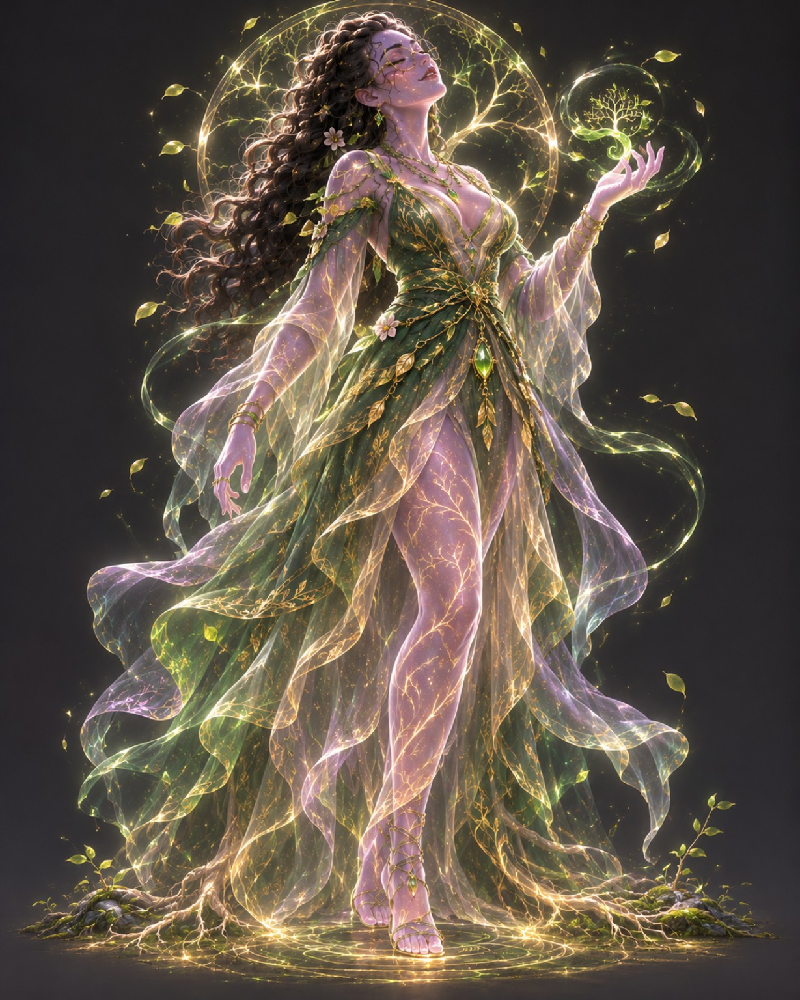
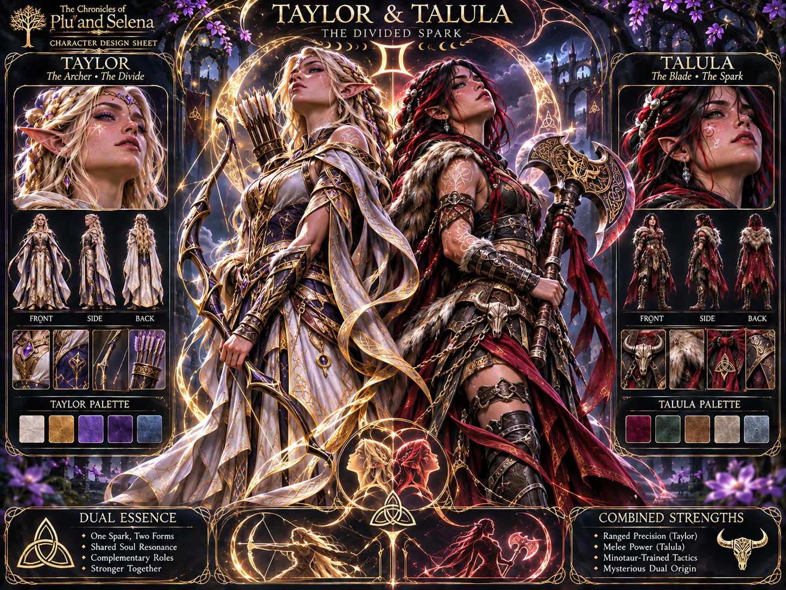
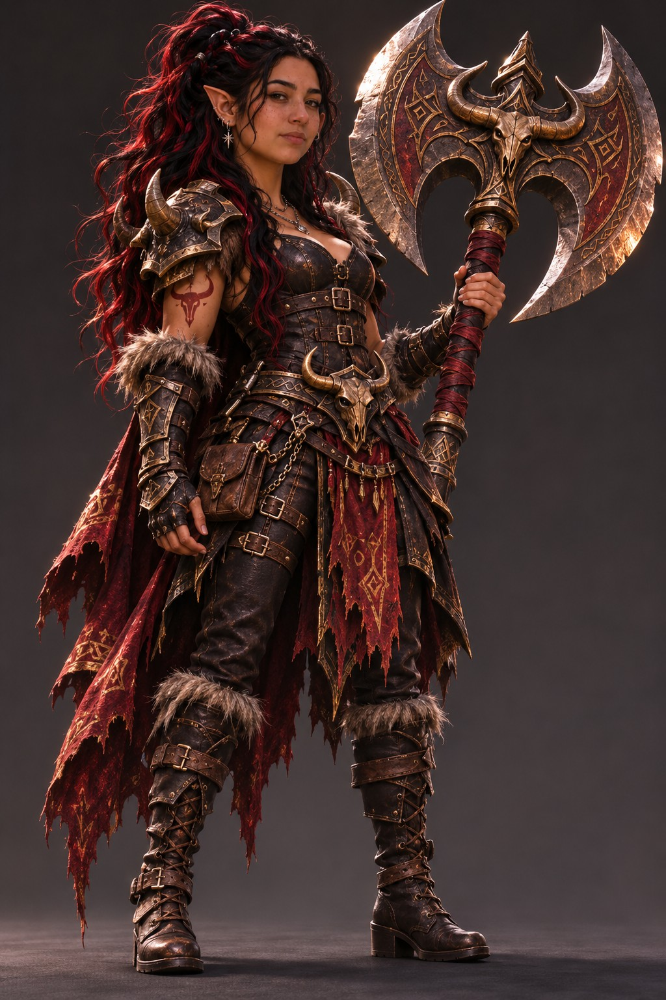
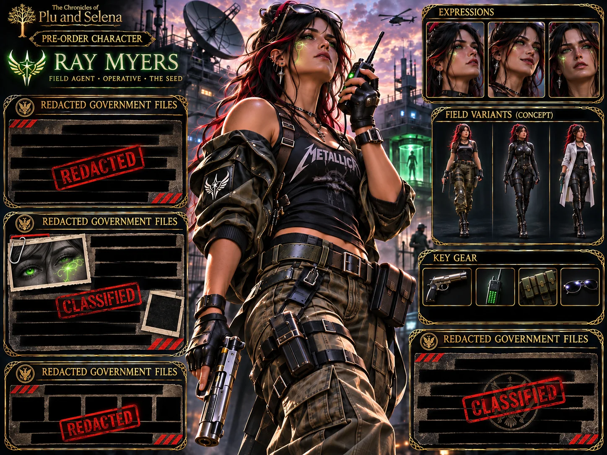
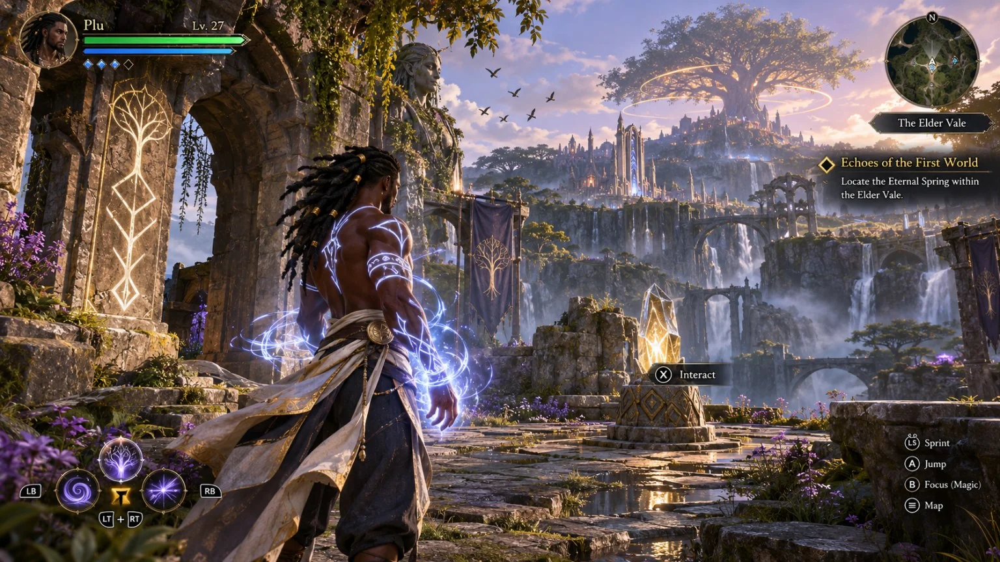

Race & heritage
Choose from proposed playable peoples, with culture and ancestry influencing appearance. Final playable options and mechanical differences will be determined in development.
A game proposal set in an established book universe
A world should be more than a battlefield. Explore its wonders, find your people, learn magic, and help communities rebuild after the Fracture.
Concept only. Proposed third-person, single-player-first fantasy action RPG. No playable game, approved production schedule, or confirmed publishing partnership is being represented.
See character creationDiscover the gameplayView artworkThe meaning behind the game
In the books, gods and heroes change the fate of the world. The game asks a quieter, more personal question: what happens to everyone who must live in that world afterward?
You play as a new hero whose journey intersects with the existing mythology without replacing it. War and magic leave consequences, but you are not limited to fighting. You can listen to people, investigate damaged places, build trust, reconnect settlements, and make the world feel lived in again.
The aim is to combine wonder, adventure, relationships, and restoration. A shared meal, a repaired bridge, or a community reunited should matter alongside a major battle.

Elf Blood, The World Before, and The Goddess Elf establish the series mythology. The proposed game follows a player-created protagonist in an adjacent storyline. Plu, Selena, Breni, Reyla, Taylor and Talula remain established story characters; the game does not rewrite their origins or major events.
Specific quests, gameplay balance and adaptation details remain proposals subject to development.
Unreal Engine 5–style visual direction · pre-production concept
The proposed character creator gives players control over their appearance and identity before entering the world. Select a heritage, then adjust your hair, face, body proportions, height, color palette, ears and details using a full-body preview.

Image asset awaiting upload to the website repository.
Visual design study only. This is a proposed character-creation interface, not a functional editor or real-time engine screenshot.
Choose from proposed playable peoples, with culture and ancestry influencing appearance. Final playable options and mechanical differences will be determined in development.
Face presets, facial structure, nose, jaw, eye shape, eyebrow features, pointed or rounded ears, and optional distinctive traits.
Hairstyles, lengths, textures, hair colors, eye colors, skin tones, tattoos, scars and decorative markings.
Adjust height and build with heritage-appropriate proportions and full-body rotate and zoom previews.
Preview starting clothing and armor silhouettes, then view the character from multiple angles.
Save a favorite look, try a different preset or randomize features before confirming your character.
Individual character studies · pre-production
Select a character picture to reveal her fighting style, weapons, proposed abilities and place in a party. These profiles are game design concepts, not final playable characters or changes to book canon.

Goddess Elf · adaptive magicPluView fighting style and character profileProposed gameplay interpretation · not a confirmed playable build
These moves illustrate a possible game interpretation of Plu’s divine abilities; no finalized skill tree or damage values exist.

Dark archmage · area controlSelenaView fighting style and character profileProposed gameplay interpretation · not a confirmed playable build
Different magical effects and costume studies are visual alternatives, not separate characters or changed canon.

Vampire demi-god · swift meleeBreniView fighting style and character profileProposed gameplay interpretation · not a confirmed playable build
The specific combinations are illustrative mechanics; Breni’s established identity and equipment remain unchanged.
Reyla, Taylor, Talula and Ray are presented separately. Their narrative connections are not expanded here.

Earth spirit · restoration / supportReylaView fighting style and character profileProposed gameplay interpretation · not a confirmed playable build
Reyla’s support role and relationship to the living world inform the game concept; ability names are provisional.

Dual-elf concept · long-range archerTaylorView fighting style and character profileProposed gameplay interpretation · not a confirmed playable build
The link between Taylor and Talula is story-sensitive. The dual design is a concept, not a claim of two unrelated characters.

Dual-elf concept · axe fighterTalulaView fighting style and character profileProposed gameplay interpretation · not a confirmed playable build
The weapon and fighting influence come from her design direction; named combat moves remain proposals.

Human operative · tactical specialistRay MyersView fighting style and character profileProposed gameplay interpretation · not a confirmed playable build
Ray’s file remains classified in the character-sheet presentation; this gameplay description does not reveal classified story details.
Character equipment and fighting approaches are based on the approved visual references. Individual ability names and mechanics remain subject to development.
How it would play
Customize appearance, heritage, background, magical affinity, combat style and personal approach. Your protagonist is separate from the novels' main cast.
Walk through forests, cities, sanctuaries, ruins, mountain paths and inhabited regions. Discover local stories, gather clues, speak with residents and uncover routes organically.
Fight with fluid movement instead of constant brutality. Planned tools include light and medium attacks, up-to-five-hit combinations, dodges, timed parries, counters, magical abilities and finishers.
Choose and develop magical affinities. Powers consume and recover resources, support exploration as well as encounters, and unlock new tactical options through progression.
Meet allies, invite companions into your journey, and strengthen relationships through conversation, choices and shared work. Their loyalty and perspectives affect your experience.
Help repair paths, bridges and settlements, uncover Fracture damage, resolve local disputes and allow communities to recover. Improvements make a visible difference.
Not every problem needs a weapon. Investigation, negotiation and protective magic can offer alternative resolutions where an encounter or quest supports them.
A proposed long-form progression path, potentially up to level 100, develops skills, fighting styles and magic over time; exact level caps and balance are not final.
The main experience is designed around one player's story and companions. Optional cooperative activities and later endgame systems are possibilities, not confirmed features.
An adventure with a purpose
Find a damaged route, settlement, or magical site and meet the people who live there.
Investigate, learn its history, build relationships and choose how to respond.
Use magic, movement, companions, gentle combat or a peaceful alternative.
Restore what you can, earn trust, grow your skills and open the next chapter.
Example moment: You walk beside a companion through a quiet forest, reach a broken crossing, discover why the nearby village cannot travel safely, face a brief magical encounter, then help restore the route. The village changes because you were there. This is an illustrative gameplay scenario, not footage of an implemented quest.
A connected fantasy world
The proposed adventure draws on established regions such as Bozton, Everlangyrs, Teramek, New Londanais, the Dark Veil Mountains and the Minotaur Sanctuary. Exact game geography, traversable areas and quest placement are not finalized.

Elves, druids, vampires, minotaurs, dragons, dwarves, goblins and other peoples have their own histories and relationships. A settlement is not merely a quest marker: it has work, food, culture, tension and ordinary routines worth discovering.
Visit the interactive atlasExplore the creature directoryOriginal mockups from the game proposal
These visual studies include the existing character design sheets alongside intended exploration, companions, combat, quest screens, character UI, and restoration. They are concept mockups, not screenshots of a playable game. The separate book-site artwork is intentionally not part of this gallery.
Character design sheets and gameplay mockups are presented separately. These are visual references for the proposed game, not playable 3D models.
Character art containing later-story identities is hidden by default. Use the control below if you want to reveal it.
From idea to playable proof of concept
Begin with a short 5–10-minute concept demonstration: a character walking, camera movement, a companion and a brief soft-combat encounter.
Target a 30–60-minute forest-valley sequence featuring character creation, exploration, a companion, magical combat and a meaningful restoration decision.
Use that prototype to evaluate scope, accessibility, narrative design, systems, partnerships and funding before committing to a full production plan.
Development status: This page presents a creative game pitch and intended systems. No playable build, developer commitment, launch date, platform release, or publisher agreement is announced.
Return to the books and world